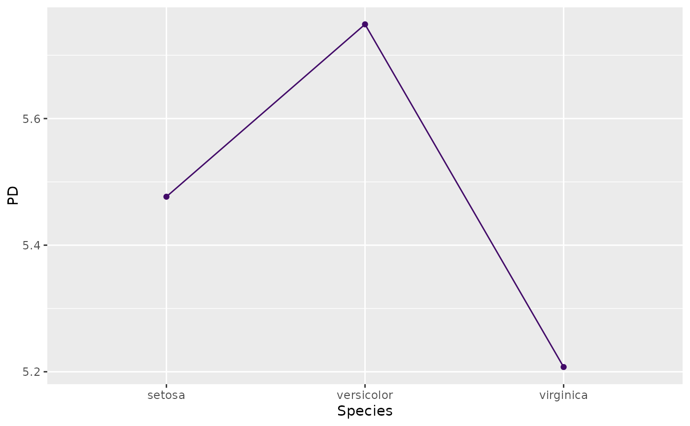
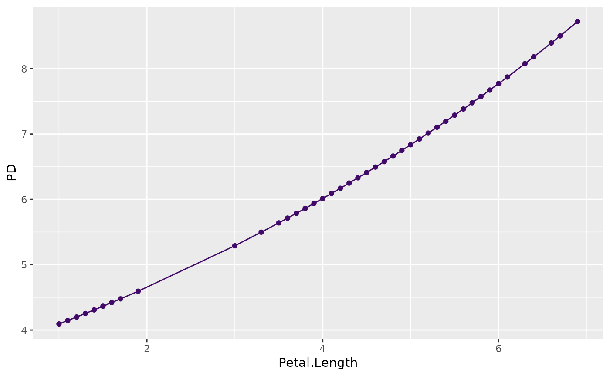

Estimates the partial dependence function of feature(s) v over a
grid of values. Both multivariate and multivariable situations are supported.
The resulting object can be plotted via plot().
partial_dep(object, ...)
# Default S3 method
partial_dep(
object,
v,
X,
pred_fun = stats::predict,
BY = NULL,
by_size = 4L,
grid = NULL,
grid_size = 49L,
trim = c(0.01, 0.99),
strategy = c("uniform", "quantile"),
na.rm = TRUE,
n_max = 1000L,
w = NULL,
...
)
# S3 method for class 'ranger'
partial_dep(
object,
v,
X,
pred_fun = NULL,
BY = NULL,
by_size = 4L,
grid = NULL,
grid_size = 49L,
trim = c(0.01, 0.99),
strategy = c("uniform", "quantile"),
na.rm = TRUE,
n_max = 1000L,
w = NULL,
survival = c("chf", "prob"),
...
)
# S3 method for class 'explainer'
partial_dep(
object,
v,
X = object[["data"]],
pred_fun = object[["predict_function"]],
BY = NULL,
by_size = 4L,
grid = NULL,
grid_size = 49L,
trim = c(0.01, 0.99),
strategy = c("uniform", "quantile"),
na.rm = TRUE,
n_max = 1000L,
w = object[["weights"]],
...
)Fitted model object.
Additional arguments passed to pred_fun(object, X, ...),
for instance type = "response" in a glm() model, or reshape = TRUE in a
multiclass XGBoost model.
One or more column names over which you want to calculate the partial dependence.
A data.frame or matrix serving as background dataset.
Prediction function of the form function(object, X, ...),
providing \(K \ge 1\) predictions per row. Its first argument represents the
model object, its second argument a data structure like X. Additional arguments
(such as type = "response" in a GLM, or reshape = TRUE in a multiclass XGBoost
model) can be passed via .... The default, stats::predict(), will work in
most cases.
Optional grouping vector or column name. The partial dependence
function is calculated per BY group. Each BY group
uses the same evaluation grid to improve assessment of (non-)additivity.
Numeric BY variables with more than by_size disjoint values will be
binned into by_size quantile groups of similar size. To improve robustness,
subsampling of X is done within group. This only applies to BY groups with
more than n_max rows.
Numeric BY variables with more than by_size unique values will
be binned into quantile groups. Only relevant if BY is not NULL.
Evaluation grid. A vector (if length(v) == 1L), or a matrix/data.frame
otherwise. If NULL, calculated via multivariate_grid().
Controls the approximate grid size. If x has p columns, then each
(non-discrete) column will be reduced to about the p-th root of grid_size values.
The default c(0.01, 0.99) means that values outside the
1% and 99% quantiles of non-discrete numeric columns are removed before calculation
of grid values. Set to 0:1 for no trimming.
How to find grid values of non-discrete numeric columns?
Either "uniform" or "quantile", see description of univariate_grid().
Should missing values be dropped from the grid? Default is TRUE.
If X has more than n_max rows, a random sample of n_max rows is
selected from X. In this case, set a random seed for reproducibility.
Optional vector of case weights. Can also be a column name of X.
Should cumulative hazards ("chf", default) or survival
probabilities ("prob") per time be predicted? Only in ranger() survival models.
An object of class "partial_dep" containing these elements:
data: data.frame containing the partial dependencies.
v: Same as input v.
K: Number of columns of prediction matrix.
pred_names: Column names of prediction matrix.
by_name: Column name of grouping variable (or NULL).
partial_dep(default): Default method.
partial_dep(ranger): Method for "ranger" models.
partial_dep(explainer): Method for DALEX "explainer".
Let \(F: R^p \to R\) denote the prediction function that maps the \(p\)-dimensional feature vector \(\mathbf{x} = (x_1, \dots, x_p)\) to its prediction. Furthermore, let $$ F_s(\mathbf{x}_s) = E_{\mathbf{x}_{\setminus s}}(F(\mathbf{x}_s, \mathbf{x}_{\setminus s})) $$ be the partial dependence function of \(F\) on the feature subset \(\mathbf{x}_s\), where \(s \subseteq \{1, \dots, p\}\), as introduced in Friedman (2001). Here, the expectation runs over the joint marginal distribution of features \(\mathbf{x}_{\setminus s}\) not in \(\mathbf{x}_s\).
Given data, \(F_s(\mathbf{x}_s)\) can be estimated by the empirical partial dependence function
$$ \hat F_s(\mathbf{x}_s) = \frac{1}{n} \sum_{i = 1}^n F(\mathbf{x}_s, \mathbf{x}_{i\setminus s}), $$ where \(\mathbf{x}_{i\setminus s}\) \(i = 1, \dots, n\), are the observed values of \(\mathbf{x}_{\setminus s}\).
A partial dependence plot (PDP) plots the values of \(\hat F_s(\mathbf{x}_s)\) over a grid of evaluation points \(\mathbf{x}_s\).
Friedman, Jerome H. "Greedy Function Approximation: A Gradient Boosting Machine." Annals of Statistics 29, no. 5 (2001): 1189-1232.
# MODEL 1: Linear regression
fit <- lm(Sepal.Length ~ . + Species * Petal.Length, data = iris)
(pd <- partial_dep(fit, v = "Species", X = iris))
#> Partial dependence object (3 rows). Extract via $data. Top rows:
#>
#> Species y
#> 1 setosa 5.476540
#> 2 versicolor 5.748857
#> 3 virginica 5.207491
plot(pd)

if (FALSE) { # \dontrun{
# Stratified by BY variable (numerics are automatically binned)
pd <- partial_dep(fit, v = "Species", X = iris, BY = "Petal.Length")
plot(pd)
# Multivariable input
v <- c("Species", "Petal.Length")
pd <- partial_dep(fit, v = v, X = iris, grid_size = 100L)
plot(pd, rotate_x = TRUE)
plot(pd, d2_geom = "line") # often better to read
# With grouping
pd <- partial_dep(fit, v = v, X = iris, grid_size = 100L, BY = "Petal.Width")
plot(pd, rotate_x = TRUE)
plot(pd, rotate_x = TRUE, d2_geom = "line")
plot(pd, rotate_x = TRUE, d2_geom = "line", swap_dim = TRUE)
# MODEL 2: Multi-response linear regression
fit <- lm(as.matrix(iris[, 1:2]) ~ Petal.Length + Petal.Width * Species, data = iris)
pd <- partial_dep(fit, v = "Petal.Width", X = iris, BY = "Species")
plot(pd, show_points = FALSE)
pd <- partial_dep(fit, v = c("Species", "Petal.Width"), X = iris)
plot(pd, rotate_x = TRUE)
plot(pd, d2_geom = "line", rotate_x = TRUE)
plot(pd, d2_geom = "line", rotate_x = TRUE, swap_dim = TRUE)
# Multivariate, multivariable, and BY (no plot available)
pd <- partial_dep(
fit, v = c("Petal.Width", "Petal.Length"), X = iris, BY = "Species"
)
pd
} # }
# MODEL 3: Gamma GLM -> pass options to predict() via ...
fit <- glm(Sepal.Length ~ ., data = iris, family = Gamma(link = log))
plot(partial_dep(fit, v = "Petal.Length", X = iris), show_points = FALSE)
plot(partial_dep(fit, v = "Petal.Length", X = iris, type = "response"))
